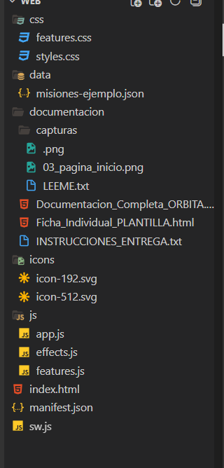
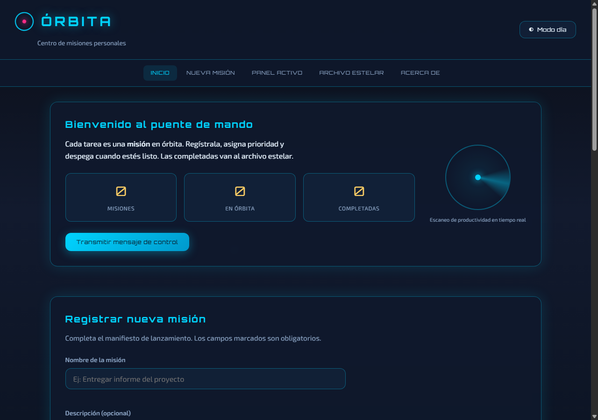
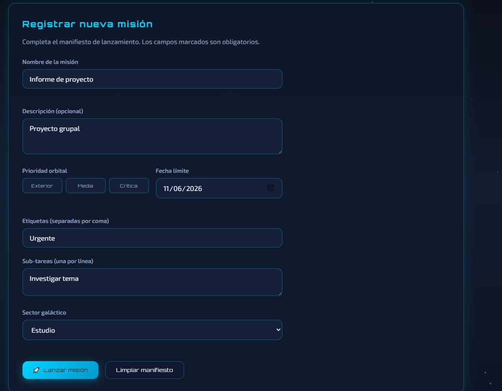
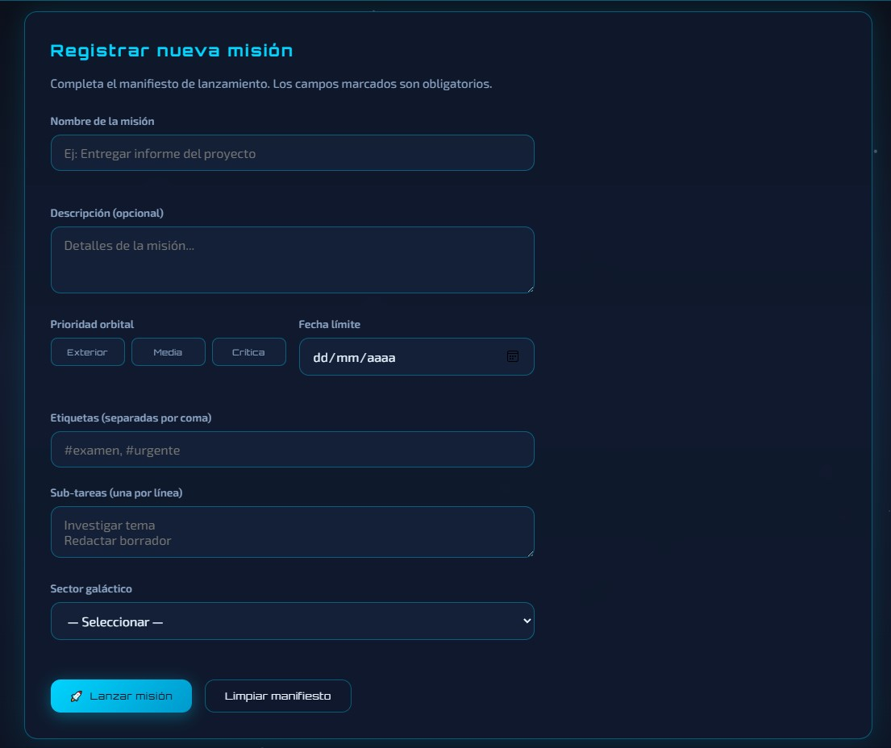

Anexo: Fichas individuales (archivos separados por integrante)
3. Introducción
3.1 Propósito del proyecto
El presente proyecto tiene como propósito desarrollar una aplicación web funcional
que integre los conocimientos adquiridos en el curso de Aplicaciones y Programación Web:
HTML5 semántico, hojas de estilo CSS, programación en JavaScript y almacenamiento local en el navegador.
Se eligió la temática lista de tareas, implementada bajo la identidad visual
ÓRBITA — Centro de misiones, un enfoque original que presenta cada tarea como una
“misión” en órbita, con prioridades, categorías, fechas límite y un archivo de misiones completadas.
3.2 ¿Qué contiene el sitio web?
El sitio web es una aplicación de una sola página (single page) organizada en siete secciones accesibles desde el menú de navegación:
Inicio: presentación del sistema, estadísticas de misiones, mapa orbital y progreso.
Nueva misión: formulario para registrar tareas con validación de campos.
Panel activo: listado de tareas pendientes, búsqueda, filtros y orden.
Calendario: vista mensual de misiones por fecha límite.
Herramientas: exportar/importar JSON, notificaciones y respaldo de datos.
Archivo estelar: tareas completadas, con sección que se puede mostrar u ocultar.
Acerca de: información del proyecto, logros y créditos técnicos.
Los datos persisten en el navegador mediante localStorage, de modo que las misiones
registradas permanecen disponibles al recargar la página. El usuario puede alternar entre tema
visual noche (espacial) y día.
3.3 Problemática abordada
En la vida académica y personal es común acumular pendientes (tareas, entregas, actividades)
sin un sistema claro para priorizarlas y darles seguimiento. Muchas personas anotan en papel
o en notas del celular, pero al cerrar el navegador o cambiar de dispositivo pierden el avance.
Además, las listas simples no distinguen urgencia, categoría ni fecha límite, lo que dificulta
organizar el tiempo de forma efectiva.
ÓRBITA aborda esta problemática ofreciendo una lista de tareas web accesible
desde cualquier navegador, con clasificación por prioridad y categoría, fechas límite visibles,
archivo de tareas completadas y persistencia local mediante localStorage,
de modo que la información no se pierde al recargar la página. La publicación en GitHub Pages
permite consultar el proyecto desde Internet sin instalar software adicional.
3.4 Público objetivo
Estudiantes, profesionales o cualquier persona que necesite organizar actividades diarias
de forma sencilla, con una interfaz clara y moderna accesible desde cualquier navegador actual.
4. Objetivos
Objetivo general
Completar, mejorar y publicar el proyecto web ÓRBITA integrando almacenamiento local mediante
localStorage y publicación en GitHub Pages, demostrando el dominio de HTML, CSS
y JavaScript adquiridos durante el curso.
Objetivos específicos
Corregir errores detectados en la Fase 1 y mejorar la interfaz (diseño coherente, navegación y responsive).
Implementar persistencia de datos con localStorage para misiones, tema, logros y preferencias.
Desarrollar funcionalidades JavaScript: funciones personalizadas, DOM, eventos, validación y arreglos/objetos.
Publicar el sitio en GitHub Pages y verificar su funcionamiento en Internet.
Documentar el proyecto con capturas, descripción técnica y conclusiones grupales.
5. Capturas de pantalla del desarrollo
Importante (Fase 2): Se requieren mínimo 15 capturas, incluyendo localStorage,
repositorio GitHub, configuración GitHub Pages y sitio publicado. Guarde las imágenes en
documentacion/capturas/.
Captura 1 — Estructura de carpetas del proyecto

Insertar: explorador de archivos mostrando WEB/, css/, js/, documentacion/
Captura 2 — Edición del archivo index.html (creación HTML)
Insertar: editor con index.html abierto (etiquetas semánticas, menú, secciones)
Captura 3 — Página principal / sección Inicio

Insertar: navegador en #inicio con estadísticas y radar
Captura 4 — Menú de navegación y diseño semántico
Insertar: barra de navegación con los 7 enlaces visibles (y menú móvil en pantalla pequeña)
Captura 5 — Formulario de nueva misión (estado inicial)

Insertar: sección Nueva misión con campos vacíos
Captura 6 — Validación del formulario (mensajes de error)

Insertar: formulario con errores visibles (campos obligatorios, fecha inválida, etc.)
Captura 7 — Misión registrada correctamente (toast de éxito)
Insertar: mensaje de confirmación tras enviar el formulario
Captura 8 — Panel de misiones activas con tarjetas
Insertar: lista de tareas con prioridades, filtro y botones completar/eliminar
function validarCampoFecha(valor) {
if (!valor) return "La fecha límite es obligatoria.";
const seleccionada = new Date(valor + "T00:00:00");
const hoy = new Date();
hoy.setHours(0, 0, 0, 0);
if (seleccionada < hoy) {
return "La fecha no puede ser anterior a hoy.";
}
return "";
}
Persistencia con localStorage en js/app.js:
function cargarMisiones() {
const datos = localStorage.getItem("orbita_misiones");
misiones = datos ? JSON.parse(datos) : [];
misiones = misiones.map(normalizarMision);
}
function guardarMisiones() {
localStorage.setItem("orbita_misiones", JSON.stringify(misiones));
actualizarEstadoStorage();
}
6. Descripción técnica
6.1 Archivos creados
Archivo / carpeta
Tipo
Descripción
index.html
HTML5
Página principal: estructura semántica, menú responsive, 7 secciones, formulario y enlaces a CSS/JS.
css/styles.css
CSS3
Estilos externos: variables, tema noche/día, layout, tarjetas, animaciones, responsive.
js/app.js
JavaScript
Lógica de la aplicación: validación, CRUD de misiones, eventos, localStorage.
css/features.css
CSS3
Estilos de calendario, Pomodoro, modal extendido y widgets adicionales.
js/features.js
JavaScript
Calendario, drag-and-drop, export/import JSON, Pomodoro, rachas y logros.
js/effects.js
JavaScript
Efectos visuales: partículas, mapa orbital, animaciones y reloj.
data/misiones-ejemplo.json
JSON
Datos de ejemplo para la API mock (fetch).
documentacion/
Informe
Documentación grupal, fichas individuales, capturas e instrucciones de entrega.
Verificación: Abrir la URL publicada, crear una misión, recargar la página (F5) y confirmar
que los datos persisten. Adjuntar capturas 15–17 en la sección 4.
8. Conclusiones
La elaboración del proyecto ÓRBITA permitió al grupo aplicar de manera integrada
las tecnologías fundamentales del desarrollo web front-end. Se logró una aplicación
funcional, organizada y visualmente coherente, que va más allá de una lista de
tareas convencional al incorporar una metáfora de “misiones espaciales” sin sacrificar la usabilidad.
Desde el punto de vista técnico, se reforzaron competencias en maquetación semántica,
diseño responsive con CSS y programación orientada a eventos en JavaScript,
incluyendo validación de datos, manipulación del DOM y almacenamiento local. La división por archivos
(index.html, styles.css, app.js) facilitó el trabajo colaborativo
y la preparación de la exposición individual por secciones.
Como aspectos de mejora futura, el grupo identifica sincronización en la nube, notificaciones
push automáticas y mayor cobertura de pruebas de accesibilidad (WCAG).
Aprendizajes obtenidos
El grupo consolidó el uso de HTML5 semántico para estructurar una aplicación de
una sola página con encabezado, navegación, secciones temáticas y pie de página accesible.
En CSS aprendimos a organizar el diseño con variables, temas claro/oscuro,
Flexbox, Grid y media queries para adaptar el menú y las tarjetas a dispositivos móviles.
Con JavaScript reforzamos la programación orientada a eventos: validación de
formularios, creación dinámica de listas, modales, filtros y funciones reutilizables. Comprendimos
el ciclo guardar → leer → renderizar con localStorage, convirtiendo el arreglo
de misiones en JSON persistente. Finalmente, la publicación en GitHub Pages nos
permitió llevar el proyecto del entorno local a una URL pública verificable.
Dificultades encontradas
Entre los retos técnicos destacan: depurar errores de sintaxis en JavaScript que impedían cargar
la aplicación; asegurar que los datos no se pierdan al recargar (normalización del JSON guardado);
diseñar una navegación usable en pantallas pequeñas (menú colapsable); y configurar correctamente
GitHub Pages para que las rutas relativas a CSS, JS y datos JSON funcionen en la URL publicada.
También fue necesario probar la persistencia en DevTools (Application → Local Storage) para
documentar el cumplimiento del requisito.
Aplicaciones futuras
ÓRBITA puede ampliarse como herramienta personal de productividad para estudiantes (seguimiento
de tareas por materia), equipos de trabajo (misiones compartidas) o uso individual diario.
A futuro se podría integrar sincronización en la nube, recordatorios automáticos, edición
colaborativa y una versión instalable (PWA) ya preparada parcialmente en el proyecto.
En conjunto, se considera que el entregable cumple los requisitos de la Fase 2
del proyecto grupal: interfaz mejorada, localStorage funcional, JavaScript completo y sitio publicado.
Firmas del grupo (opcional en versión impresa):
Integrante
Firma
[Nombre 1]
_________________________
[Nombre 2]
_________________________
[Nombre 3]
_________________________
9. Exposición en video (5 minutos)
Según el Tercer Examen Parcial, el grupo debe entregar un video grupal de aproximadamente
5 minutos que incluya presentación general, objetivos, demostración en funcionamiento
y una parte individual por integrante (HTML, CSS, JavaScript, localStorage o GitHub Pages).
9.1 Estructura sugerida del video
Tiempo
Parte
Contenido
0:00 – 0:45
Grupal
Presentación del proyecto ÓRBITA, integrantes y objetivo general.
0:45 – 2:00
Grupal
Demostración: crear misión, completar, recargar (F5) y mostrar persistencia.
2:00 – 2:45
Individual
Integrante HTML: estructura de index.html, menú y formulario.
2:45 – 3:15
Individual
Integrante CSS: tema noche/día, tarjetas y diseño responsive.
Video grupal ~5 min (exposición grupal e individual)
☐ Enlace listo
—
Ficha individual PDF por cada integrante
☐ Una por persona
—
Carpeta WEB con proyecto funcional
☐ Incluida en ZIP
Criterios de evaluación (referencia)
Funcionalidad del proyecto
30%
HTML y CSS
20%
JavaScript
20%
localStorage
10%
GitHub Pages
10%
Exposición grupal e individual (video)
10%
TOTAL
100%
11. Anexo — Fichas individuales
Cada integrante debe entregar una ficha individual (una página por persona),
usando el archivo Ficha_Individual_PLANTILLA.html incluido en esta carpeta.
Duplique la plantilla, complete sus datos y expórtela a PDF junto con este documento.
Distribución sugerida para la exposición individual:
Integrante (ejemplo)
Sección a explicar
Archivo principal
Integrante 1
HTML — estructura y formulario
index.html
Integrante 2
CSS — diseño y temas
css/styles.css
Integrante 3
JavaScript — validación y lógica
js/app.js
Integrante 4
localStorage — persistencia de datos
js/app.js, js/features.js
Integrante 5
GitHub Pages — publicación
Repositorio y URL publicada
Documentación generada para el Proyecto Grupal ÓRBITA — Aplicaciones y Programación Web — Fase 2
Para exportar a PDF: Ctrl + P → Guardar como PDF (recomendado: Google Chrome o Microsoft Edge).